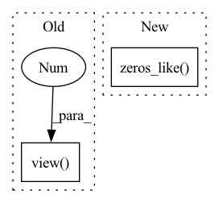

Pattern ID :26614

Before Change
y_true ([Tensor]): [btz, ner_vocab_size, seq_len, seq_len]
y_pred ([Tensor]): [btz, ner_vocab_size, seq_len, seq_len]
y_true = y_true.view(y_true.shape[0]*y_true.shape[1], -1) // [btz*ner_vocab_size, seq_len*seq_len]
y_pred = y_pred.view(y_pred.shape[0]*y_pred.shape[1], -1) // [btz*ner_vocab_size, seq_len*seq_len]
y_pred = (1-2*y_true) * y_pred
After Change
y_pred_neg = y_pred - y_true * 1e12
y_pred_pos = torch.cat([y_pred_pos, torch.zeros_like(y_pred_pos[..., :1])], dim=-1)
y_pred_neg = torch.cat([y_pred_neg, torch.zeros_like(y_pred_neg[..., :1])], dim=-1)
loss = torch.sum(torch.logsumexp(y_pred_pos, 1) + torch.logsumexp(y_pred_neg, 1)) / y_pred_neg.shape[0]
return loss
In pattern: SUPERPATTERN
Frequency: 3
Non-data size: 2
Instances
Fragment ID: 79678205
Project Name: tongjilibo/bert4torch
Commit Name: 8409bce2e81ac89b716495bc1b47617ba6f40e77
Time: 2022-03-29
Author: tongjilibo@163.com
File Name: bert4torch/losses.py
M Class Name: MultilabelCategoricalCrossentropy
N Class Name: MultilabelCategoricalCrossentropy
M Method Name: forward(3)
N Method Name: forward(3)
M Parent Class: nn.Module
N Parent Class: nn.Module
M File Name: bert4torch/losses.py
N File Name: bert4torch/losses.py
M Start Line: 62
M End Line: 70
N Start Line: 60
N End Line: 64
'>
Before Change
else:
preds = np.argmax(preds, axis=-1)
acc = torch.sum(truths == preds).item() / len(preds)
f1 = f1_score(truths.view(-1), preds.view(-1), average="weighted")
return acc, f1
After Change
truths = truths.cpu().detach()
preds_inds = np.argmax(preds, axis=-1)
preds = torch.zeros_like(preds)
for i in range(total):
preds[i, preds_inds[i]] = 1
'>
Fragment ID: 79678204
Project Name: wenliangdai/modality-transferable-mer
Commit Name: 38664b152a63fb703932bd0b32dfdf90fb6b3d48
Time: 2020-06-15
Author: wenliang.dai.1995@gmail.com
File Name: src/evaluate.py
M Class Name: AnonimousClass
N Class Name: AnonimousClass
M Method Name: eval_iemocap(2)
N Method Name: eval_iemocap(3)
M Parent Class:
N Parent Class:
M File Name: src/evaluate.py
N File Name: src/evaluate.py
M Start Line: 147
M End Line: 166
N Start Line: 155
N End Line: 177
'>
Before Change
) // for numerical stability
with torch.no_grad():
origin_cos = cos_theta.clone()
target_logit = cos_theta[torch.arange(0, embbedings.size(0)), label].view(-1, 1)
sin_theta = torch.sqrt(1.0 - torch.pow(target_logit, 2))
cos_theta_m = (
target_logit * self.cos_m - sin_theta * self.sin_m
After Change
)
if is_half:
cos_theta_m = cos_theta_m.half()
index = torch.zeros_like(cos_theta)
index.scatter_(1, label.data.view(-1, 1), 1)
index = index.byte().bool()
output = cos_theta * 1.0
output[index] = cos_theta_m[index]
'>
Fragment ID: 79678203
Project Name: cavalleria/cavaface
Commit Name: 98a21048f5dce435a6639a288dafc4c6be61be05
Time: 2021-08-25
Author: 605370459@qq.com
File Name: head/metrics.py
M Class Name: ArcFace
N Class Name: ArcFace
M Method Name: forward(3)
N Method Name: forward(3)
M Parent Class: nn.Module
N Parent Class: nn.Module
M File Name: head/metrics.py
N File Name: head/metrics.py
M Start Line: 81
M End Line: 103
N Start Line: 67
N End Line: 86